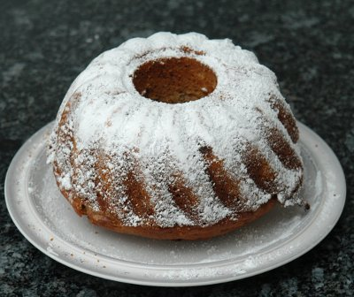

| Zutaten: | |
| 300 g | Mehl |
| 100 g | Baumnusskerne |
| 250 g | Bananen |
| 50 g | Butter |
| 160 g | Zucker |
| 2 | Eier |
| 1 EL | Backpulver |
| 1/4 TL | Salz |
| 2 EL | Rum |
| Puderzucker | |
Gugelhopfform 20 cm Ø, 2 l Inhalt
Ofen auf gute Mittelhitze (200°C) vorheizen.
Form sorgfältig befetten und mit Paniermehl ausstreuen.
Nüsse mahlen. Bananen mit einer Gabel zerdrücken.
Butter, Zucker, und Eier schaumig rühren.
Mehl, Backpulver und Salz dazu sieben. Rum, Nüsse und Bananenmus dazugeben. Alle Zutaten gut vermischen.
Masse in die Form füllen. Gugelhopf 50 bis 60 Minuten backen.
Auskühlen lassen.
Vor dem Servieren mit Puderzucker besieben.
Zu diesem Gugelhopf passt die beim Schokoladengugelhopf erwähnte Glasur.
Herbert Eigenmann, Code: GGB
Hat ende Juli im Büro den Kollegen sehr gut geschmeckt.
@LINKBACK_TAG@ @WAKELOCK@